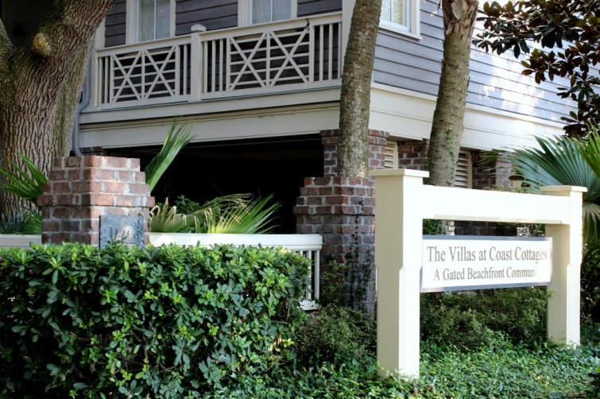
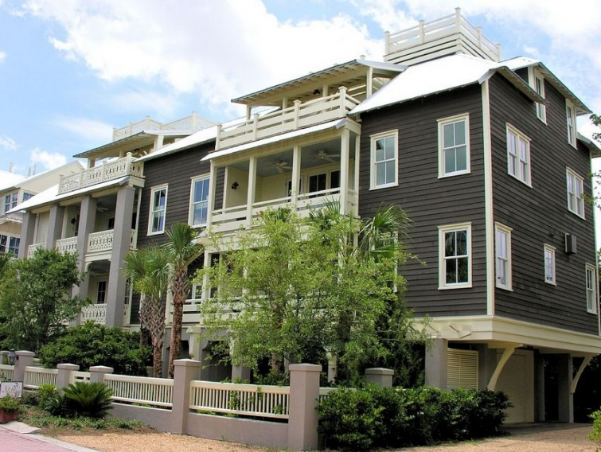

.png)
.PNG)
.PNG)
.PNG)
.PNG)
.PNG)
.JPG)
.JPG)
.PNG)
.PNG)


 The Villas at Coast Cottages...
I am not normally a fan of condominiums or anything other than “stand alone” homes, but these are the exception. Â I even like the exteriors with their painted siding and uniquely designed porch railing.
vrbo.com
A number of the units are available for rent for your vacation. Â Would you like to see the interiors of a few of them? Â Here is the living area in the Live Oak villa. Â It was the original model home there.
And here is one of the bedrooms in it.
Another unit is the Cypress Villa.
I am thinking these 2 photos show the same room at two different times.

And here is the living room in Cypress.
Another pretty one for you to see is the Camellia villa.
Here is the exterior.
Check out the view from its rooftop deck!
And take a peek inside.
I found some photos from another unit at The Villas at Coast Cottages, but I could not find a name for it.  I really think these from the “no name villa” are my favorite ones. 🙂 See what you think.
Now, I have one other place for us to talk about. You have probably seen it before.
Do you remember this house?
It was the 2003 Coastal Living Idea House located on St. Simons Island, and it is at the end of the street where The Villas at Coast Cottages are.  You know that view out the back has to be gorgeous. 🙂  Here is a view of the house from the beach.
Just in case you don’t remember it from way back in 2003, here are a couple of  photos of it from Coastal Living magazine. The ceilings in all of the rooms were amazing.
Do you ever wonder what happens to those idea houses after the tours are finished? Â I do. Â So I did a little research to see what became of this one on St. Simons, and although it is not a complete history, here is what I learned…
I do not know what became of it immediately after the tours closed, but it was actually on the rental market for a number of years. Â Wouldn’t you love to be able to stay in an idea house?! Â Here are some photos from one of the rental agencies that previously handled it. Â These really showcase the extraordinary ceilings.
In October, 2009 it went up for auction along with two of the Coast Cottage villas. Â There was some information about the auction here. Â I do not know if it sold at the auction, but it did go into foreclosure in the spring of 2011. Â It sold almost 2 years later in the spring of 2013 for $1,600,000. Â I found some photographs of the listing for its sale. Â The empty rooms are kind of sad to me when you consider how beautifully decorated they once were. Â Here is the great room from above as it appeared on Zillow.
Here is the kitchen and dining area. Â (Something about it reminds me of the empty Shop Around the Corner in You’ve Got Mail.)
This is the bedroom with the blue ceiling.
Maybe I should not think of it as sad rooms. Â Perhaps the better way is to look at it as…Â potential. Â Because we know that this space with its lovely cabinetry…
can become this space.
And this porch and deck…
can become this fabulous place. 🙂
Potential…a much more optimistic way of looking at things. Right?
I hope you have enjoyed all the places from Coast Cottages…the homes, the villas, and the Idea House.  I have a few more things to share with you from St. Simons (hope you are not tired of the island by now. 🙠)  Don’t forget that there is a giveaway going on right now for two wonderful autographed books by Barbara Hinske and a $25 gift card.
The giveaway is open to U.S. residents only until Thursday, August 14, 2014 at midnight Eastern Time. The winner will be announced/notified on Sunday, August 17, 2014. Â To enter, just leave a comment on any of the St. Simons Island posts that publish between 8/7/14 and 8/14/14. Â You may enter on any or all of the posts, but you may only enter once per post please. Â Good luck!
Until next time…


.PNG)
A gorgeous island with so many gorgeous homes and getaways!
Would love to win.
Kelly, I write this from a cottage I’m visiting on Tybee Island, a trip that was inspired by your posts in April. This has been a great place to visit, and nearby St. Simons Island sounds great too. I hope to get there on a future trip. Thanks so much for your ideas on coastal destinations.
Love these villas!! Beautiful inside and out…especially the unique pool/spa that’s included!! Adding a return trip to St. Simon’s Island, and a stay here to my bucket list. 🙂
I would love to win!!! Great give away. I really want to go to ST. Simons Island!
So love these posts! My husband is actually reading these and we are planning another trip for next anniversary1
Thank you for posting these pictures….It’s nice to be able to “travel” by looking at your blog!!! And it saves me a WHOLE lot of money!!! –Bev S.
Kelly,
Thanks for sharing more lovely cottages/beach houses. I love the gray siding with white trim combination.
Sharon
Hi Kelly,
How sad that the Coastal Living home went into foreclosure. I’m surprised that they don’t do a big contest, similar to the HGTV Dream Homes. I would certainly enter to win!! I do think that the St. Simons cottages are so beautiful – yet another place that I would love to visit! Thanks for all of the information on a lovely vacation area that I may not have heard of otherwise 🙂
Megan
Kelly,
I agree with you about living in only “stand alone” homes but since we have been looking for a second place on the California coast for awhile, a condo sounds better and better because of less maintenance on the outside. I do love The Villlas at Coast Cottages and might have to switch from the West to East Coast! Thanks again for another great post, take care, Lindy
Kelly,
Thank you for another wonderful trip to the beautiful St. Simons. The photos are all very inspirational and I never tire of homes, cottages, rentals etc. built by the water. I love the deck on the Idea house. So pretty all decorated and so much potential sitting empty as well.
Love all the posts about St. Simons. Having grown up in Brunswick, it seems like home. In fact, we are headed there next weekend to celebrate my Mom s 85 birthday. Thank you for the awesome give away!
Sign me up! I LOVE all of these houses and their gorgeous rooms!
What a beautiful place! Thanks for the chance to win these books!
Nancy
it has been years since visiting St. Simons. Loved the church and actually went inside and toured. Love, love your blog and your reading recommendations.Enjoyed seeing all the beach houses.
Eva
The furnishings obviously change the appearance of the rooms, but I think the LIGHT does nearly as much! What a contrast, the brightness with the dismal, shadowy photos. Let the light shine!!
Those villas are pretty. Love how they’re decorated with a little personality.
Oh goodness, that would be so fun to stay in an idea house. That is neat that you researched what happened to it. I agree, it has potential, now, and the lovely inspiration of what it was. I’d like to visit it, even empty, it’s still fabulous!
I’ll take the Camellia villa, thank you. I am loving that dresser with the blue drawers. Ugh! Oh, and I’m with you Kelly, I like the “No name Villa” too. Well, excuse me while I go organize an estate sale, buy more wicker and start anew. Maybe then I could feel like I am on vacation everyday? Thank you Kelly for my “Morning dreaming” moment…
Debra
OMGoodness! I love, love, love these beach house posts. They are my favorites! It is like taking a mini vacation! Thank you!!!
This spot is gorgeous, just what us cold Northerners would appreciate in the early Spring 2015
Those roof top decks with ocean views are something to swoon for. Just looking at them makes me feel relaxed. Maybe that is the type of picture I should put in front of my desk….hmm.
St. Simons is definitely on my bucket list.
Fun fact~ I just had lunch with Barbara Hinske yesterday and she is truly a lovely and delightful woman. What talent!
Kelly,
The St. Simons “condo” project is so architecturally attractive and in such a great location I believe I could be persuaded to reconsider a condo! The thing that strikes me on the rental places is how nicely they are all decorated. I generally don’t think of rental places as having such great design. Often they appear that they received the leftovers where furnishings were concerned. 🙂
The idea house was sure pretty. I’m happy to hear it finally sold.
Karen
Now I am even more excited about my upcoming road trip with my dear friend…. we will be in that area and your posts has given us some MAJOR ideas!! 🙂 …. Beautiful!!!!!
What a magical place. wouldn’t it be wonderful to summer there. I never tire of your tours-you have such a great eye and know just what to share with us! Thanks for all the hard work you put into these tours!
How lovely! I especially liked the Cypress Villa living room, and I pinned that image immediately. 🙂 I don’t remember this particular idea house, but I did enjoy seeing the pics you posted. And yes, I agree, POTENTIAL! Thanks for sharing.
Thank you for shaing your post on my favorite island. I had toured the Idea House and the Coastal Living 2003 house. I loved seeing the pictures and the memories!
Love that whole area and especially love looking at gorgeous homes! I could happily live in any one of those homes!
I never get tired of seeing and learning about the coastal areas and the beautiful houses and cottages. I am so glad that one of your readers mentioned Sue Monk Kidd’s book The Mermaid Chair which I finally got to read while on my mini vacation and relating the imaginary outer banks island setting in her book with St. Simons. Now I want to start Eugenia Price’s trilogy you told about in the last post. I read her book Maria with the setting in St. Augustine– love her writing style.
You’re killing me Kelly! Too much eye candy!
Thank you so much for the beautiful pictures. I stumbled across your blog a few weeks ago and have been hooked ever since!!!! It’s my new late night escape.
Thanks for another great tour. We go to Hilton Head every summer but I would like to investigate St Simons. Hope you are enjoying your week! Mickey
So sad about the foreclosure. I like your attitude though about the potential. It is beautiful.
The first home you shared is absolutely adorable. I may even try to rearrange my family room like one of the pictures your shared.
Love your post today. Thanks so much for sharing!
Thank you for sharing places and homes that I would never see without you. Love all your post.
LOVELY! I like these condos,very light & airy. Maybe whoever bought the idea home will see your post and let us see what they have done, it is a beautiful house even when it is empty.
Another great tour for sure! Thank you so much. I absolutely love a Coastal Living house. I was lucky enough to tour the one in Rosemary Beach that Erik Powell designed…… I read on her instagram that the folks that bought it redesigned one of my favorite rooms in the house…..sad. but like you mentioned….to each his own…potential. Thanks for the great tour!
Thanks for doing these posts. We’re always looking for a new interesting place to visit!
I love St Simons and what wonderful places to see. Like you, I think the unnamed one is my favorite. I think the idea house looks sad now too – amazing what the furnishings for a place can do…hoping someone buys it soon!!
Thank you for another great visit. I love to imagine being in all these great places. It is sad to see the idea house empty…wonder what it looks like with the new owners?
Have a great week.
Jeanne